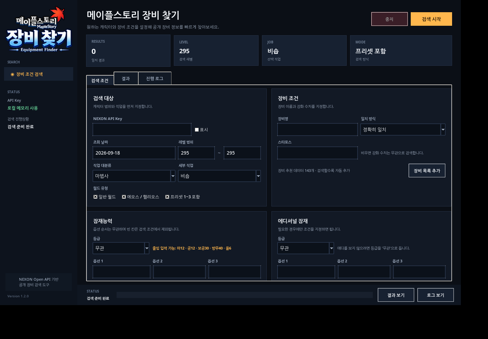
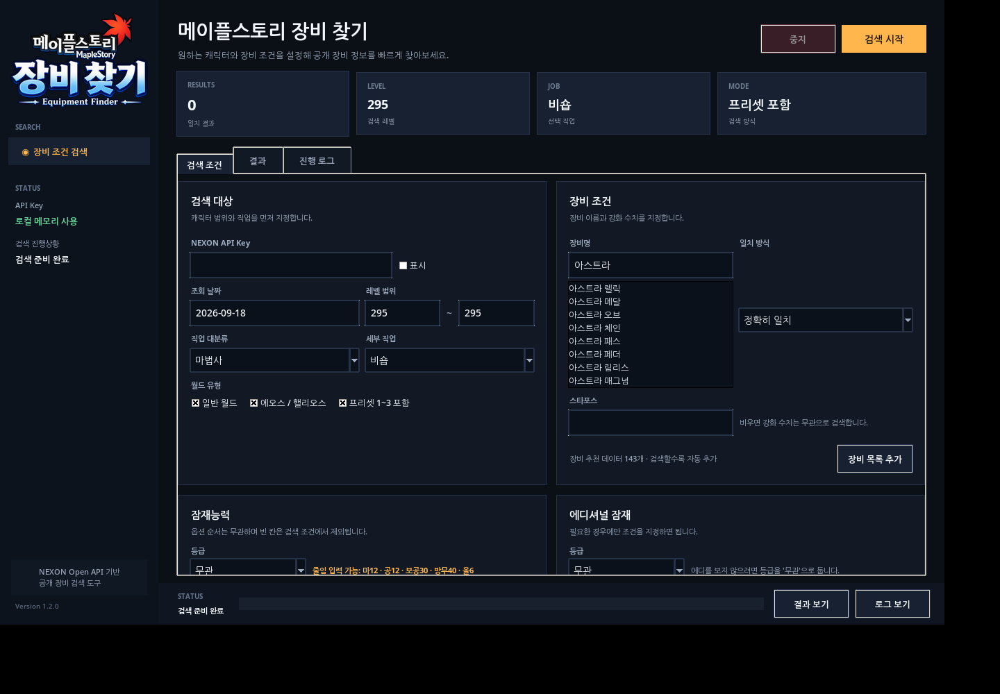

장비 이름부터 잠재능력까지
원하는 조건으로 찾아보세요.
레벨, 직업, 장비, 스타포스, 잠재능력, 에디셔널 잠재능력을 조합해 공개된 캐릭터 장비 정보에서 원하는 결과를 찾습니다.

빠르게 조건을 좁히는 장비 검색
원하는 조건만 입력하세요. 장비명과 스타포스는 기본적으로 비어 있어 필요한 경우에만 제한할 수 있습니다.
레벨 · 직업 검색
레벨 범위와 직업 대분류·세부 직업을 선택해 후보 캐릭터를 좁힙니다.
장비명 자동완성
장비명의 일부만 입력해도 관련 장비를 추천합니다. 검색 중 발견한 장비명도 자동으로 추천 데이터에 추가됩니다.
스타포스 · 잠재 · 에디
스타포스와 잠재능력·에디셔널 옵션까지 원하는 만큼 세밀하게 지정할 수 있습니다.
장비명은 일부만 입력해도 됩니다
예를 들어 아스트라라고 입력하면 관련 장비명이 즉시 추천됩니다.
다운로드
압축을 풀고 메이플스토리 장비 찾기를 실행하면 됩니다.
메이플스토리 장비 찾기 1.2.0
Maplestory Equipment Finder for Windows
처음 사용하는 방법
네 단계만 거치면 바로 검색할 수 있습니다.
다운로드
Windows용 ZIP을 받고 원하는 폴더에 압축을 풉니다.
프로그램 실행
메이플스토리 장비 찾기를 실행합니다.
API Key 입력
NEXON Open API에서 발급받은 Key를 입력합니다.
조건 설정
원하는 조건을 입력하고 검색 시작을 누릅니다.
실제 프로그램 화면
새 자동완성 기능도 실제 프로그램 화면에서 확인할 수 있습니다.

자주 묻는 질문
모든 메이플스토리 장비가 처음부터 추천되나요?
완전한 자동완성을 위해서는 전체 장비명 카탈로그가 필요합니다. 현재 버전은 공식 아스트라 장비와 관련 장비를 기본으로 포함하고, 실제 검색에서 발견되는 장비명을 자동으로 학습해 추천 목록을 계속 확장합니다. 별도의 JSON/TXT 장비명 목록도 프로그램에서 추가할 수 있습니다.
왜 전체 장비 DB를 Open API에서 바로 받지 않나요?
현재 NEXON Open API는 캐릭터의 장착 장비와 프리셋 데이터를 제공하는 구조이며, 프로그램에서 바로 내려받을 수 있는 전체 장비명 카탈로그는 별도로 제공되지 않아 로컬 카탈로그 방식으로 구성했습니다.
장비명을 비워두면 어떻게 되나요?
장비 이름으로 제한하지 않고 다른 조건만으로 검색합니다.
검색 도중 새 장비가 나오면?
조회한 캐릭터의 장비명은 로컬 추천 데이터에 자동으로 추가되어 다음 검색부터 자동완성에 사용할 수 있습니다.